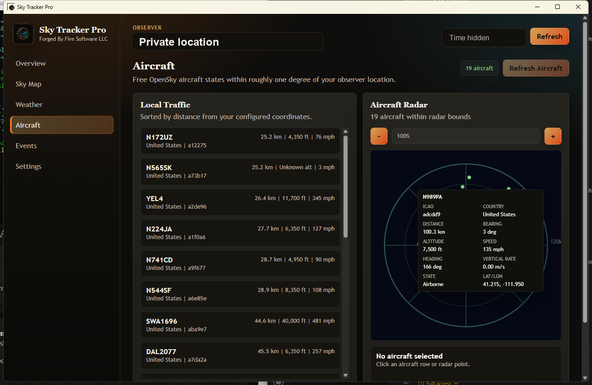

Sky and Observer Dashboard
Shows your configured observer location with live sky, weather, event, and aircraft telemetry.
Free sky, weather, aurora, and aircraft tracker
Sky Tracker Pro brings local sky data, weather radar, NOAA space weather context, and nearby aircraft into one Forged By Fire desktop app.
Shows your configured observer location with live sky, weather, event, and aircraft telemetry.
Displays current Open-Meteo conditions and a RainViewer radar panel so you can see local weather movement.
Uses OpenSky aircraft states to show nearby traffic, distance, altitude, speed, and a radar-style view.
Includes NOAA space weather context for aurora and planetary K index awareness.

Version: 0.1.0
Platform: Windows desktop app
File: Portable ZIP, 172.8 MB
Cost: Free
How to run: Download the ZIP, extract it, then open Sky Tracker Pro.exe from the extracted folder.
Internet: Weather, aircraft, radar, and space weather panels use public online data sources.
Sky Tracker Pro is new and not code-signed yet, so Microsoft Defender SmartScreen may warn that it is not commonly downloaded. Only continue if you started the download from cmforgedbyfire.com or the official cmforgedbyfire GitHub release.


Location: Set your observer location in the app settings for the best sky and aircraft results.
Data sources: Public data can be delayed, rate-limited, or temporarily unavailable.
Feedback: Use the support page with your city/state, what panel you tested, and what did or did not load.